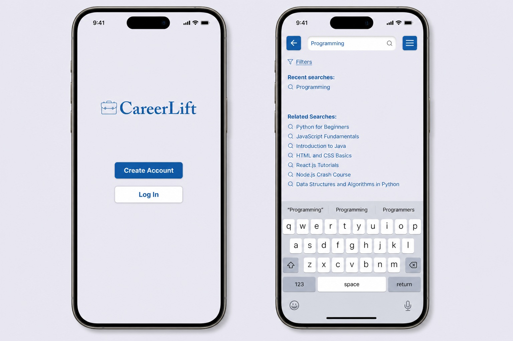
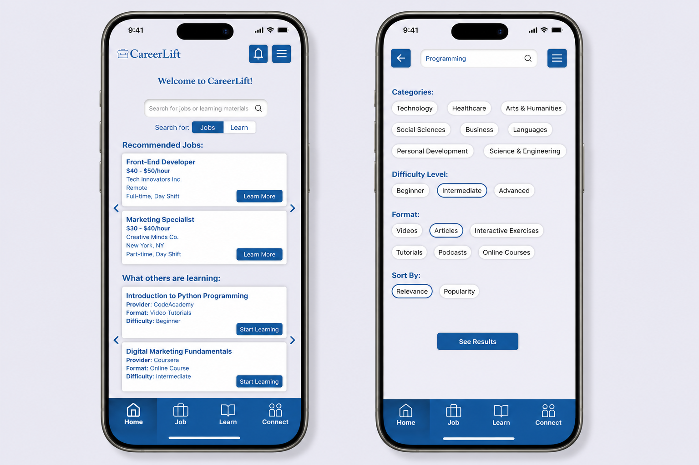

CareerLift
A mobile app designed to bridge the career opportunity gap for young adults from lower socioeconomic backgrounds — giving them the job listings, skill resources, and mentorship connections they need to move forward.

Overview
The Brief
CareerLift aims to address the equity problem of limited job access for young adults from lower socioeconomic backgrounds. These individuals often face significant barriers — lack of resources, networks, and guidance — in finding and securing employment. The app provides a centralized platform with tools to help them find, apply for, and grow into careers.
The Problem
Young adults ages 18–25 from lower socioeconomic backgrounds face limited access to job opportunities and professional networks. Without a centralized platform offering personalized guidance, many struggle to navigate an opaque and overwhelming job market — leaving them underemployed or unemployed despite their motivation and potential.
Target Audience
Pain Points
Lack of Resources
Limited access to job listings, career advice, and skill development resources.
Limited Networks
Few connections to potential employers or mentors to open doors.
Financial Constraints
Unable to afford professional development courses or career counseling.
Confidence Issues
Low self-esteem and confidence in their ability to secure employment.
Research
SWOT Analysis
Strengths
- Holistic platform: job listings, skill development, and networking in one place
- Curated specifically for young adults from lower socioeconomic backgrounds
- Intuitive mobile-first interface built for the target audience
- Fosters mentorship and community connections
Weaknesses
- Keeping job listings current and relevant is resource-intensive
- Assumes a baseline level of digital literacy
- Sustained engagement may require ongoing feature updates or incentives
Opportunities
- Partnerships with educational institutions, companies, and non-profits to expand listings
- Potential to scale the platform for other underserved demographic groups
Threats
- Competing with well-established job search platforms
- Economic downturns can reduce the number of available opportunities
- User data privacy concerns may reduce trust and adoption
User Personas
Jamal Carter
Find a stable entry-level tech job with room for growth.
Most job platforms don't cater to entry-level roles or offer guidance on navigating the job market.
Sofia Rodriguez
Secure a full-time office job with benefits and a clear career path.
Overwhelmed by irrelevant listings on popular job sites with no tailored guidance on standing out.
Design Process
Key Design Challenge
The home screen search bar needed to serve two purposes — finding jobs and finding learning materials — without creating confusion. The solution was a segmented toggle directly below the search field ("Jobs" / "Learn") that scopes the search before the user types, reducing cognitive load while keeping the interface clean and unified.
Key Research Insights
- Personalization and relevance are the biggest unmet needs in existing platforms
- Networking and mentorship features are highly valued by the target audience
- Accessible, low-friction design is critical — the simpler the better
- Resource quality matters more than quantity for building trust
Usability Testing
5 users were given a task: search for a specific learning material and navigate to the screen with the "Start Learning" or "Add to Plan" button. Users completed the task with ease and were clear about which actions to take. The following improvements were identified:
Increase Contrast
Enhance button and search result contrast to improve visibility and accessibility across different lighting conditions.
Combine Filters with Search
Integrate filter options directly into the search bar on results screens to streamline the interface and reduce steps.
Icon-Based Notifications
Replace text-based notification labels with icons for a more modern, scannable experience.
Side-by-Side Buttons
Arrange equal-weight action buttons side by side on detail screens to use space more effectively.
Icon-Based Navigation
Switch the bottom nav from text labels to icons to reduce visual clutter and feel more app-native.
Contextual Filter Panel
Present filters as a slide-up overlay rather than a separate screen so users don't lose context.
Final Design
The final prototype features four core modules navigable through an icon-based bottom bar: a personalized Home feed, a Job search and application flow, a Learn section for skill development materials, and a Connect section for mentorship and networking.
View Figma Prototype →
Reflection
What I Learned
This project deepened my understanding of core design principles — balance, contrast, hierarchy, and alignment — and how they work together to create functional, visually coherent interfaces. I also practiced the "Usability Test with 5 People" method as a structured, repeatable way to gather actionable design feedback.
Next Steps
Given more time, I would run additional usability testing sessions with a more diverse group from the target audience, with a focus on accessibility for users with limited tech experience, non-native speakers, and users with disabilities. I would also explore engagement features — such as progress tracking and goal-setting — to support long-term retention.